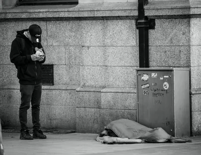
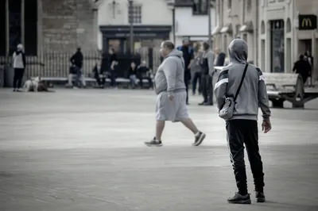
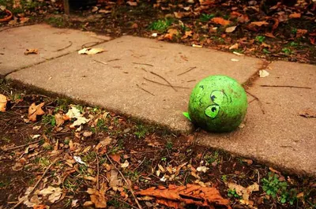
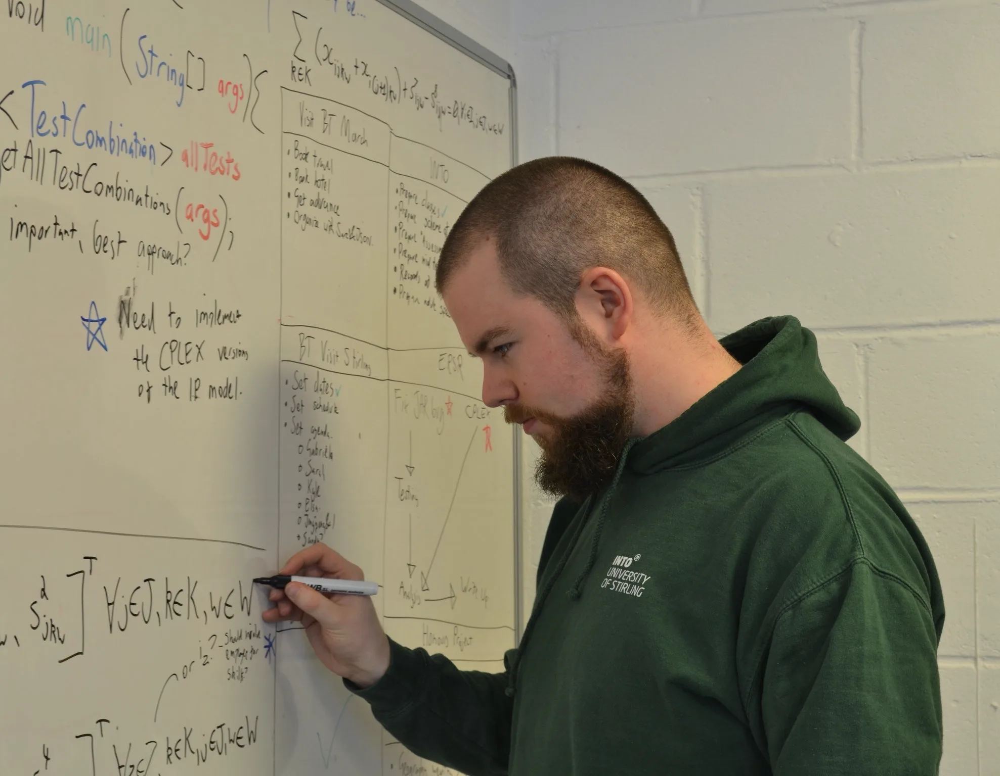

Why Nobody Thanks the Person Who Stopped the Disaster
When a surgeon pulls a crash victim back from the brink, we put them on the evening news. When a traffic engineer proactively redesigns an intersection so the crash never happens, they are just doing their job.
We are wired to celebrate dramatic rescues while ignoring quiet prevention. The firefighter gets the parade; the building manager who installed the sprinkler system gets a line in a maintenance log. The doctor treating a novel outbreak makes the front page; the epidemiologist who catches it before it spreads gets a paper publication and secondary authorship (because it was a postdoc and the professor is taking the credit, IYKYK). Once you notice this structural bias against preventative success, it will drive you crazy: because you'll notice it everywhere (much like one of my favorite ideas: the Baader-Meinhof phenomenon, when you learn of a new word you suddenly notice it everywhere).
Counting Ghosts
The human brain is terrible at counting ghosts. We are evolutionarily primed to react to events: a loud noise, a sudden crisis, a visible villain, a tangible hero -- but prevention isn't an event, in fact it is, by definition, a non-event. It's the absence of a disaster, and absence is incredibly difficult to measure or reward.
Daniel Kahneman and Amos Tversky (1973) famously described the availability heuristic: our tendency to judge the likelihood of an event based on how easily it comes to mind.[6] A plane crash is vivid and immediate; millions of safe, boring flights are not. A violent crime dominates the timeline; the thousands of de-escalated interactions that didn't turn violent never enter the record. Nuclear power is perhaps the starkest case: Chernobyl and Fukushima are seared into public memory, while the decades of continuous, uneventful operation at hundreds of reactors worldwide barely register. In terms of deaths per unit of energy produced, nuclear is consistently among the safest sources we have, yet public perception runs almost exactly backwards. Because the counterfactual of the burning building, the pandemic, or the meltdown remains invisible, the people who keep us safe have nothing to show for their work but a normal Tuesday (ps: is it really one of my blogs if I don't somehow moan about the lack of nuclear power?)
There's also what epidemiologist Geoffrey Rose described in 1985 as the prevention paradox: a preventive measure that benefits a whole population may produce no obvious benefit for most individuals who experience it.[9] You wash your hands and, most days, you were probably not going to get sick anyway. The benefit is real in aggregate but hard to feel personally, so people rarely feel grateful for it, and they rarely reward the people who made it happen. I think these thoughts frequently when I'm washing my hands in a bathroom and see some guy come out of a stall, walk up to a sink, run the water and touch it with his hands then leave - ew.
I'm going on a tangent: If that feels anecdotally true, the data supports it. Observational studies consistently find women washing their hands after restroom use at rates above 90%, while for men the figure drops to between 31% and 65% depending on the setting; men are also significantly less likely to use soap, or to wash for the CDC-recommended 20 seconds needed to dislodge pathogens.[12][13][14])

The examples are persuasive, but messy
OK my tangent may have actually been useful: handwashing is a good example of what I'm talking about. Ignaz Semmelweis figured out in the 1840s that doctors washing their hands between the morgue and the delivery ward would dramatically cut maternal mortality. He was right, and he was ignored, ridiculed, and eventually committed to an asylum, where he died of the very infection he had been trying to prevent.[8] His idea was demonstrably correct, but it asked people to change their behaviour to stop something that had no accepted cause at the time. Before germ theory was widely accepted, there was no pathogen to point at; there was only a correlation in the data and a recommendation that sounded, to the doctors who were supposed to be the experts, like an accusation, and he was killed by infection, and by the pride of his colleagues.
Road safety works the same way. The UK's road fatality rate fell from around 7,500 deaths per year in the early 1970s to under 1,700 by 2020.[2] That's a massive change: thousands of lives saved every year, achieved through a combination of seatbelt legislation, speed limits, drink-driving laws, road design improvements, vehicle safety standards, and a shift in cultural perspectives around these various safety factors (I know I'm not driving anyone refusing to put on their seatbelt). Yet there are no ceremonies for the people who lobbied for seatbelt legislation in the 1960s and 1970s, and no memorials to the engineers who designed safer road layouts.
Y2K is a useful case study precisely because it is not as clean as people often make it. In the late 1990s, thousands of programmers and IT professionals worked for years to audit and fix systems that used two-digit year formats, which could have caused failures when clocks rolled over to 2000. Some of the warnings were sober; some were inflated by consultants and publishers with an obvious interest in alarm.[11] In hindsight, many unfixed systems would probably have produced minor glitches rather than catastrophic failures, while other systems really did need careful remediation. When 1 January 2000 arrived and little went wrong, a large part of the cultural response became mockery: proof, supposedly, that the whole thing had been a lucrative panic. Some of the calm was bought by serious preventive work, and some of the panic probably oversold the danger. So if everything went wrong, the workers would be blamed for not taking it seriously enough, and when much of the problem was prevented due to their efforts, they are ridiculed. Yep, that sure sounds like working in IT.
Dan Heath frames this as upstream versus downstream work: pulling people out of a river is visible and heroic, but fixing the bridge they keep falling from is slow, systemic, and emotionally unrewarding.[5] Y2K followed that pattern exactly, and so does most preventive work.
In public health, vaccines are the prime example. Vaccination eliminated smallpox, a disease that killed an estimated 300 million people in the 20th century alone.[3] Because smallpox no longer exists in the general population, it is now an abstract historical fact rather than a visceral present threat. The result is that the danger is systematically underestimated, and the preventive measure, vaccination, faces resistance that the original disease, were people still dying from it, would almost certainly not face. Data from another disease, measles, shows how quickly that complacency unlocks ignorance: CDC weekly data rises from 63 U.S. cases in 2023 to 283 in 2024 and 2,286 in 2025; by 10 May 2026, the year had already reached 1,893 cases.[15] So, even when the heroes of history save a buttload of people (that's a scientific measurement); humans still do an amazing job of buggering it all up.

Beyond the availability heuristic, there's the related concept of negativity bias: we weight negative events more heavily than positive ones of equivalent magnitude.[1]
A near miss feels more significant than a routine safe journey.
A contaminated water supply makes headlines in a way that the preceding years of clean supply do not. This asymmetry means that reactive responses to present harm get more attention, more funding, and more political will than proactive responses to potential harm.
Here's an example I remember first hearing about on international news back when I lived in Scotland, before moving near the area: the Flint water crisis. In 2014, Flint switched water sources as a cost-saving measure but failed to apply corrosion control, which allowed lead to leach from aging pipes into drinking water.[16] Pediatric surveillance then showed elevated blood lead levels in children under five rising from 2.4% to 4.9% after the switch, with the worst burden in the most disadvantaged neighborhoods (because systematic problems almost always affect the disadvantaged first, not billionaires!).[17] Only after visible harm and national outrage did large-scale emergency funding and infrastructure action follow.
There's also an attribution problem. When something goes wrong, there's a clear causal chain: something happened, someone was responsible, here is the outcome. When something is prevented, the causal chain runs through a counterfactual. The traffic cone sits in the road, the driver swerves, and no one is hurt, but the cone and the person who placed it are rarely credited for the non-crash.
In corporate and organisational life, this creates a toxic incentive structure. We routinely promote the policeman who exacerbates social problems by jailing people for petty crime, while underpaying educators and defunding social programs that prevent problems before they arise.
Nassim Taleb captures this perfectly in Antifragile: a politician who prevents a war gets none of the historical glory of a general who wins one, even though prevention was the vastly superior outcome.[10] Also, to be transparent, I've not yet read this book but after researching for this blog post, I intend to! I'll update this page if I disagree with Taleb's assessment from few quotes I read today.

I work in data science, and this dynamic comes up in subtle ways. A model that reliably prevents bad recommendations, filtering out outputs that would have caused harm, is never celebrated, because the bad recommendations just don't appear. The model that generates the flashy result, the chart that gets into the boardroom presentation, the prediction that was dramatically right: that's what gets noticed.
The same is true in personal life. Driving defensively, keeping space, anticipating what other drivers might do, and slowing down before the situation demands it, means you avoid incidents that a less attentive driver might have had. But you can't point to those incidents, because they didn't happen. You just arrive safely, unremarkably, again and again.
The harder political question
Preventive health gets systematically underfunded relative to treatment. In the UK, this is very much evident. When I moved to the USA I was surprised by the number of checkups and screenings that are considered routine, but in the UK the norm was very much to only go to the doctor if there's already a problem.
Mental health prevention receives a fraction of what mental health crisis intervention receives, despite evidence that early intervention is cheaper and more effective.[7] Infrastructure maintenance, the kind that keeps bridges from failing, water systems from contaminating, and power grids from going down, is perennially deprioritised in favour of new-build projects, because maintenance preserves the status quo while new builds create tangible evidence of activity and investment.
Pandemic preparedness is the most politically vivid example. After SARS in 2003 and H1N1 in 2009, funding for pandemic preparedness increased. As memories faded and the threat became abstract, funding was cut again. When COVID-19 hit, many governments were caught without stockpiles, without plans, without infrastructure, because the preparation had been allowed to atrophy. The people who had warned this would happen, who had written the reports, run the simulations, and made the recommendations, were largely ignored until the moment that their predictions came true, at which point the crisis demanded a reactive response rather than the proactive one they had been advocating for.[4] I specifically remember Bill Gates' 2015 TED talk, The next outbreak? We're not ready. Don't get me wrong, Bill Gates is an awful human being, but the warning itself was clear: the world was dangerously underprepared for a fast-moving respiratory pandemic.
Governments, organisations, and the public all develop warning fatigue when serious people repeatedly describe plausible disasters that never quite arrive. The "boy who cried wolf" problem is something we can all recognize: how many safety warnings on items, safety warnings on medications, health advice, blogs about fat or salt or sugar or avocados on toast or whatever before our eyes glaze over before even reading half the title?
There is also no such thing as infinite prevention. Every pound spent hardening one system is a pound not spent on another, and every regulation that removes one risk may introduce delay, cost, or friction somewhere else. We cannot prevent every crash, infection, breach, flood, fire, or failure. A society that tried to drive all risk to zero would spend itself into paralysis. The real argument is usually harder than "prevention good, reaction bad"; it is about which future harms are probable enough, severe enough, and preventable enough to justify present sacrifice.
This isn't irrational in the narrow sense. Politicians respond to constituents with immediate needs. Voters punish inaction on present problems and often don't reward proactive action on future ones. The incentive structures push systematically toward reaction and away from prevention, but knowing that the bias exists doesn't dissolve the budget constraint, the uncertainty, or the politics. We are just programmed to vote in the person promising to put out the fire, than the person promising to prevent ten in the future.
Still, there are ways to see the work more honestly. Public health bodies can track "deaths averted" rather than only deaths. Engineering teams can document near-misses and the interventions that prevented them. Organisations can recognise the people who stopped problems as well as the people who solved them after the fact. None of this turns uncertainty into certainty, but it does make the accounting less one-sided.
There is a personal philosophy we can try to adopt more, too. Learning to notice the preventative work around you before it becomes part of the furniture. The colleague who actually read the brief and spotted the fatal error early. The developer who wrote the boring regression test and noticed some outliers. The partner who anticipated the scheduling conflict before it exploded. These actions carry no drama and yield no great stories, but they are exactly what makes a highly competent life look so remarkably uneventful. Maybe we should learn to promote these people.
As Geoffrey Rose pointed out in 1985, the true beneficiaries of prevention are many, but they are hidden.[9] We will never meet the versions of ourselves that suffered the crash, the illness, or the failure. It takes a conscious, unnatural effort to feel grateful for the disasters we never had to survive, and to thank to people responsible for saving our lives, without us ever knowing it.
References
- Baumeister, R. F., Bratslavsky, E., Finkenauer, C., & Vohs, K. D. (2001). Bad is stronger than good. Review of General Psychology, 5(4), 323–370.
- Department for Transport. (2021). Reported road casualties in Great Britain: 2020 annual report. HM Government.
- Fenner, F., Henderson, D. A., Arita, I., Ježek, Z., & Ladnyi, I. D. (1988). Smallpox and its eradication. World Health Organization.
- Gates, B. (2015, March). The next outbreak? We're not ready [Video]. TED Conferences. ted.com
- Heath, D. (2020). Upstream: The quest to solve problems before they happen. Avid Reader Press.
- Kahneman, D., & Tversky, A. (1973). Availability: A heuristic for judging frequency and probability. Cognitive Psychology, 5(2), 207–232.
- Knapp, M., McDaid, D., & Parsonage, M. (Eds.). (2011). Mental health promotion and mental illness prevention: The economic case. Department of Health.
- Nuland, S. B. (2003). The doctors' plague: Germs, childbed fever, and the strange story of Ignaz Semmelweis. W. W. Norton.
- Rose, G. (1985). Sick individuals and sick populations. International Journal of Epidemiology, 14(1), 32–38.
- Taleb, N. N. (2012). Antifragile: Things that gain from disorder. Random House.
- Yourdon, E., & Yourdon, J. (1998). Time bomb 2000: What the year 2000 computer crisis means to you! Prentice Hall.
- Barcenilla-Guitard, M., & Espart, A. (2021). Influence of gender, age and field of study on hand hygiene in young adults: A cross-sectional study in the COVID-19 pandemic context. International Journal of Environmental Research and Public Health, 18, 13016. doi.org/10.3390/ijerph182413016
- Brown, L. G., Hoover, E. R., Barrett, C. E., et al. (2020). Handwashing and disinfection precautions taken by U.S. adults to prevent coronavirus disease 2019, spring 2020. BMC Research Notes, 13. doi.org/10.1186/s13104-020-05398-3
- Wałaszek, M., Kołpa, M., Wolak, Z., Różańska, A., & Wójkowska-Mach, J. (2018). Patient as a partner in healthcare-associated infection prevention. International Journal of Environmental Research and Public Health, 15, 624. doi.org/10.3390/ijerph15040624
- Centers for Disease Control and Prevention. (2026). Measles cases and outbreaks: Data and research. U.S. Department of Health and Human Services. cdc.gov/measles/data-research
- Ruckart, P. Z., Ettinger, A. S., Hanna-Attisha, M., Jones, N., Davis, S. I., & Breysse, P. N. (2019). The Flint Water Crisis: A coordinated public health emergency response and recovery initiative. Journal of Public Health Management and Practice, 25, S84-S90. doi.org/10.1097/PHH.0000000000000871
- Hanna-Attisha, M., LaChance, J., Sadler, R. C., & Champney Schnepp, A. (2016). Elevated blood lead levels in children associated with the Flint drinking water crisis: A spatial analysis of risk and public health response. American Journal of Public Health, 106(2), 283-290. doi.org/10.2105/AJPH.2015.303003

Follow the next post, project, or experiment
I write about systems, data science, books, photography, and practical AI. The simplest way to keep up is Bluesky or LinkedIn. If you already use a feed reader, RSS is there too.
Prefer feed readers? Use Feedly or open the raw RSS feed.